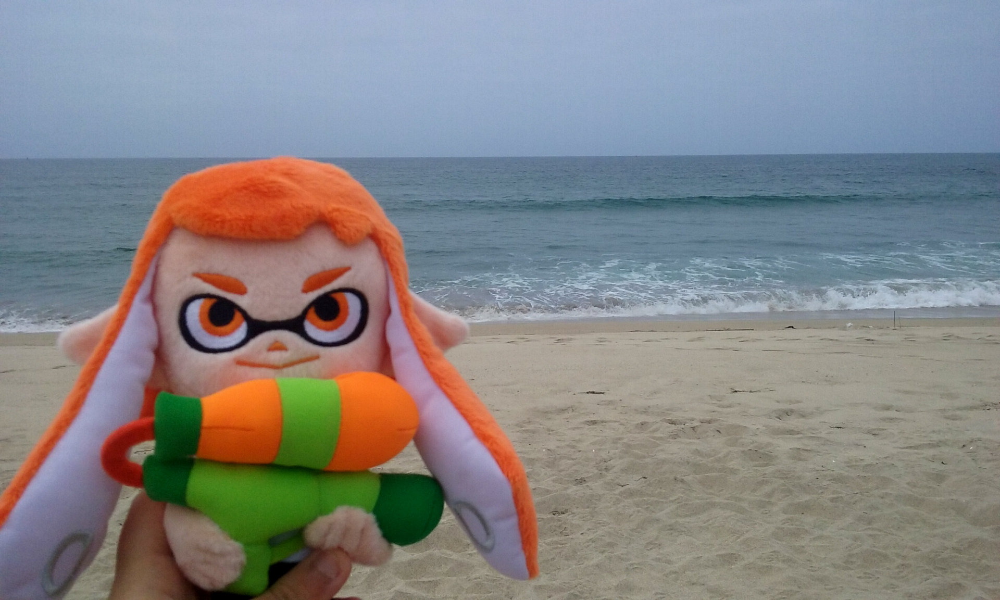
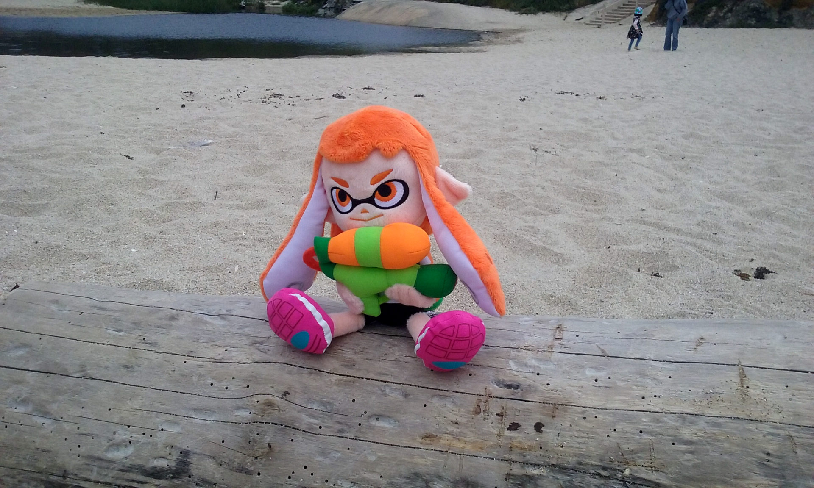
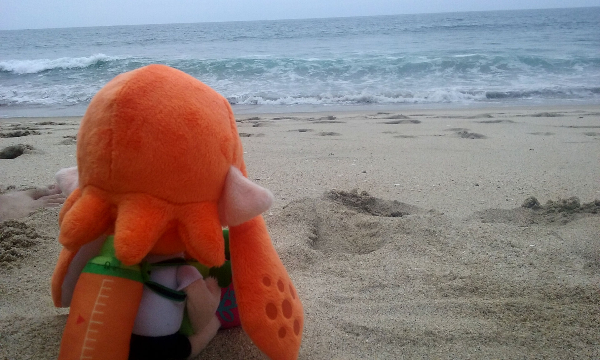
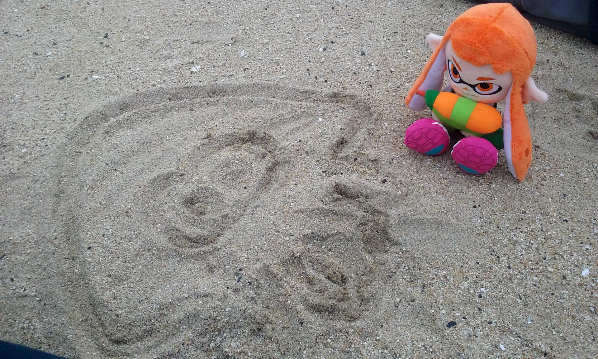
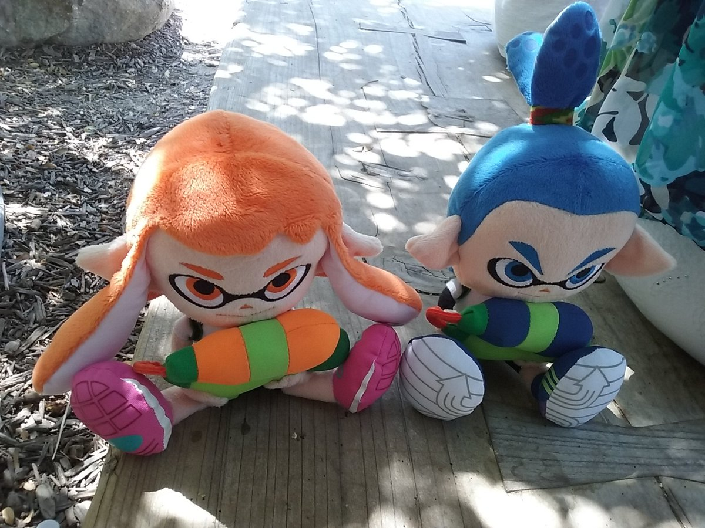
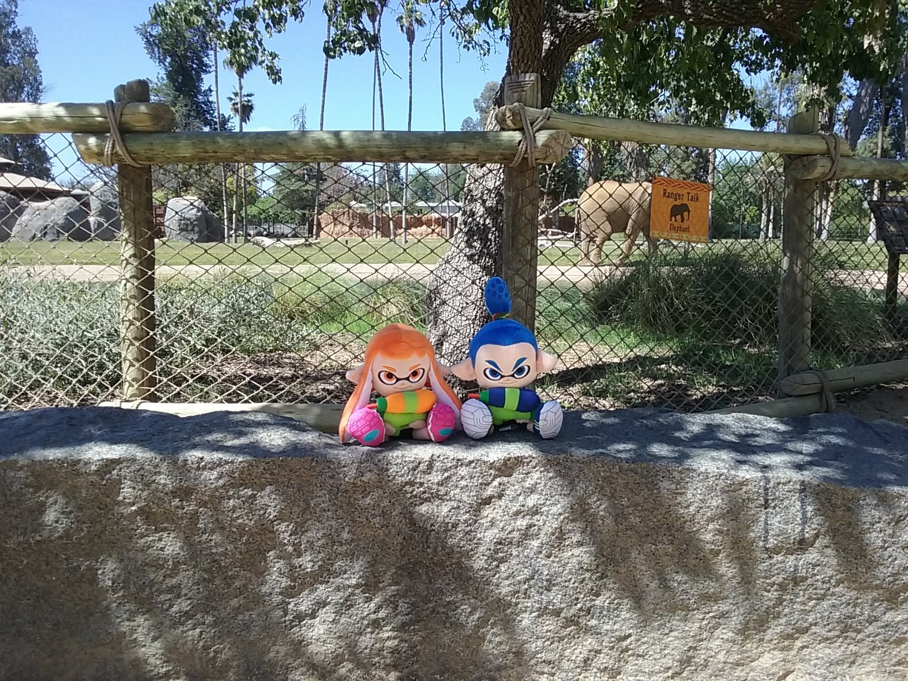
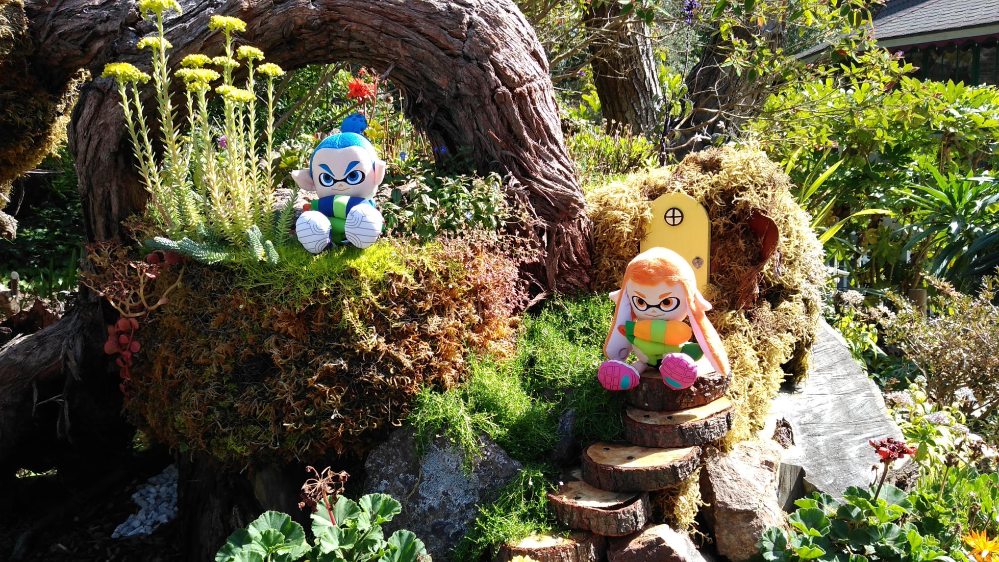
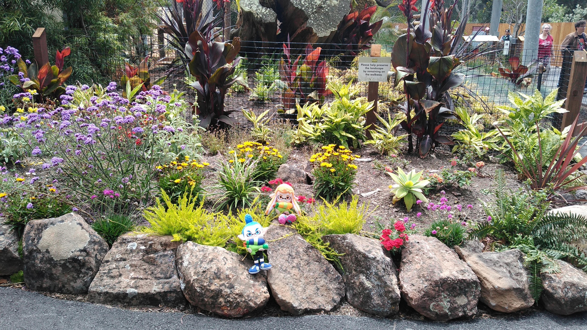
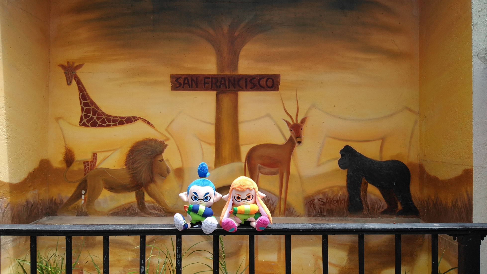
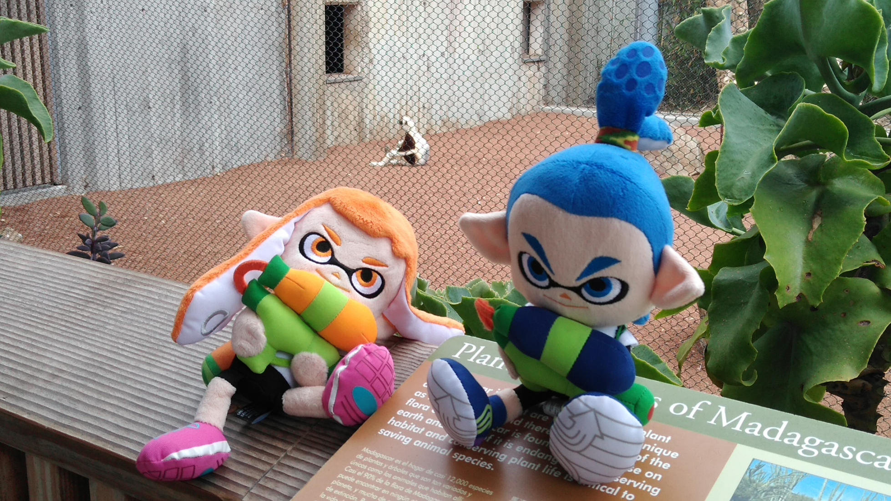

From 2016 to 2018, I took my Inkling plushies around to photograph on day trips. Until recently I rarely traveled, so I considered these special occasions and worth a bit of embarrassment for creating cute memories. Not to say I don't take plushies out anymore, still doing that. These two are just a bit large for small bags and my interests fluctuate. I shared a few photos on social media, but here's more.










(To be updated)
Back...